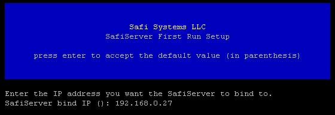

Installing SafiServer on Linux
Download the compressed SafiServer directory.
You can download a copy of SafiServer at http://www.safisystems.com/index.cfm?pageMode=downloadtrial
Untar (or unzip) the file into a directory of your choice. i.e:
# tar zxfv SafiServer32-B1-3-0.tar.gz
Navigate to the SafiServer directory:
# cd SafiServer
Run the install script file.
# ./installserver.sh
NOTE: when this is ran the first time you should see the following:

You will be prompted to enter the following values:
SafiServer bind IP: This is the local IP address that the SafiServer will use to bind to
FastAGI port: The TCP port on which to run the SafiServer FastAGI server on
sa password: This is the system administrator password for the SafiServer database server
Finish Install and Start Server
When you are finished with the initial configuration: run the following the finish the install and start the SafiServer:
# ./installserver.sh start
The install will take place in the background and you can check the status of the SafiServer by running:
# ./installserver.sh status
Software Firewall
In order to connect to the SafiServer; you may have to open ports (or turn off) any software firewall that might be running on your Linux machine (i.e. iptables).